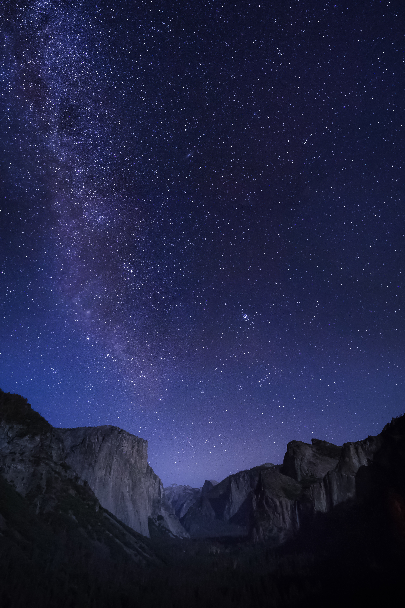
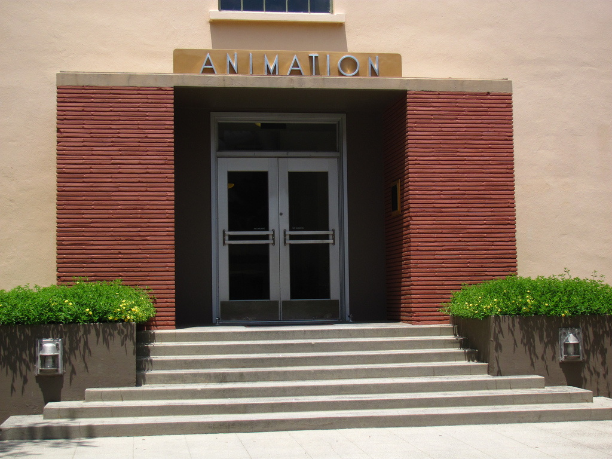
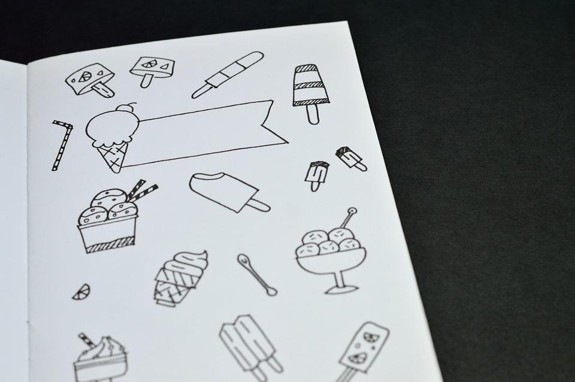

Work Cited Page Of All The Images
Image for background for home page I got from Unsplash froma user named James Donovan

The Cat photo in the center of the home page I got from pixabay by a user named xuqiankun1991

Image for background for About Page I got from Wikipedia

The Image I got to show the enterance for the Unsplash was from the user Casey Horner

The Image I used for the background image for the event page is form Unsplash for the user Alex Knight

The image I used for Event 1 I got from pixabay from the user kalhh

The image I used for event 2 was from pixabay form the user padrinan
